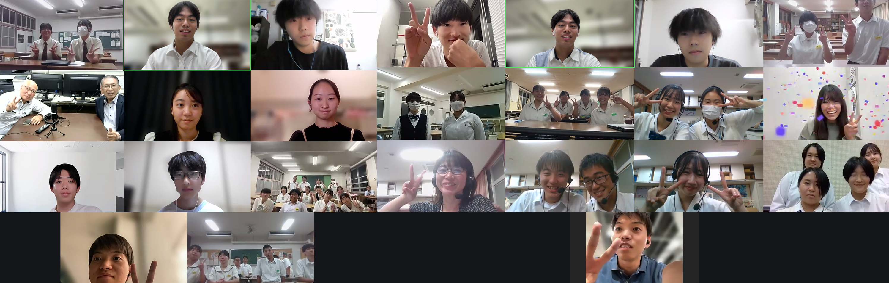
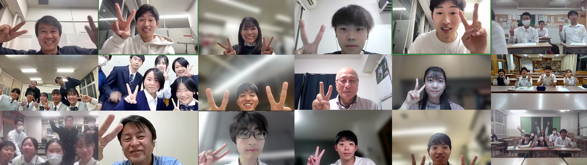
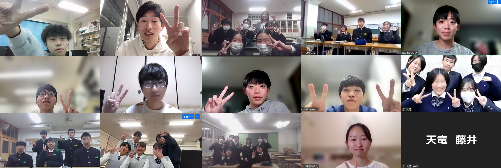
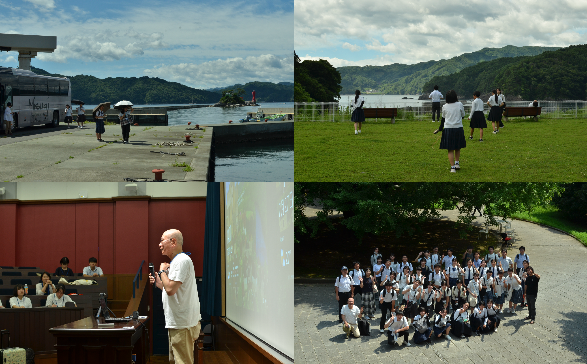
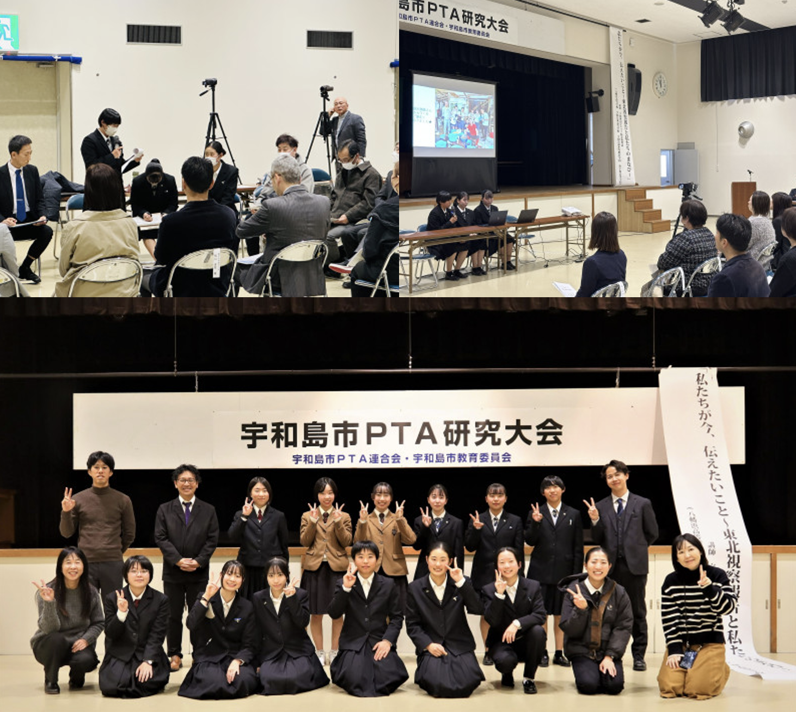

目次
全国中学生・高校生復興デザインコンペ（外部サイト）
2020年度に始動した防災地理部の活動の輪を広げていくため、全国から中学生・高校生による地域の事前復興プランを公募します。大学の教授、学生とコミュニケーションを取りながら、事前復興プランを作成し、復興デザイン会議で発表します。
演習資料
活動の進め方（詳細とポイント）
防災、事前復興とは何をすることでしょうか。何から考えればいいのでしょうか。
地域の方や家族への過去の災害に関するインタビュー、同級生へのアンケート、レイヤー分析や歴史史料調査など、復興と防災地理の学習の進め方を紹介します。
日程
| 日 | 形式 | 内容 | 参加校 |
|---|---|---|---|
| 7月（高校別） | まちあるきWS | 地元のまちを歩きながら災害リスク や地域の課題を考える | 高校別に実施 |
| 7/27(土)-30(火) | 東北復興視察 | 東日本大震災の被災地の復興を見学 | 八幡浜高校 宇和島東高校 宇和島南中等 南宇和高校 大洲高校 大洲農業高校 天竜高校 |
活動報告
まちあるきWS
愛媛県の宇和島東高校，南宇和高校，大洲高校，大洲農業高校と静岡県の天竜高校を対象に，地域のまちあるき活動を行いました． それぞれの地域を防災・避難・まちづくりなどの観点から改めて見つめ直し，今後の東北視察や提案・地域活動の方向性を考えるきっかけとなりました． まちあるき活動の詳細はこちら

東北復興視察
愛媛県の八幡浜高校，宇和島東高校，宇和島南中等，南宇和高校，大洲高校，大洲農業高校と，静岡県の天竜高校とともに東日本大震災の被災地を巡り，避難と復興まちづくりについて現場の模索を見学・体験しました． 福島県浪江町では原発事故に伴う長期避難の実態，そこからの帰還者や移住者による新しいまちづくりの動向を展示や住民の方との対話で学びました． 発災直後の避難対応が分かれた事例を浪江町の請戸小学校と石巻市の大川小学校とでそれぞれ学び，避難の重要性と判断の難しさを痛感しました． また，仙台市荒浜，石巻市雄勝町，石巻市北上町，南三陸町，陸前高田市，釜石市花露辺地区・赤浜地区では地域ごとに異なる復興の形を見ることができました． 東北で学んだことを事前復興への教訓としてそれぞれの地域へ持ち帰り，今後の提案・活動に繋げていきます． 視察の詳細はこちら

初回授業

第二回授業

第三回授業
11月24日参加校: 宇和島東高校、大阪教育大学附属高校天王寺校舎、八幡浜高校
12月5日参加校: 浜松工業高校

最終発表
12月10日に横浜市立大学で開催された復興デザイン会議において、「次世代が描く地域復興：中高生による復興・事前復興の取り組み」の題で、活動発表を行いました。 宇和島東高校、大阪教育大学附属高校天王寺校舎、なみえ創成中学校、浜松工業高校、八幡浜高校2テーム（文化財保護・ハザードマップ）から事前復興プランの提案を行い、専門家の方からコメントをいただきました。 詳しくはこちら